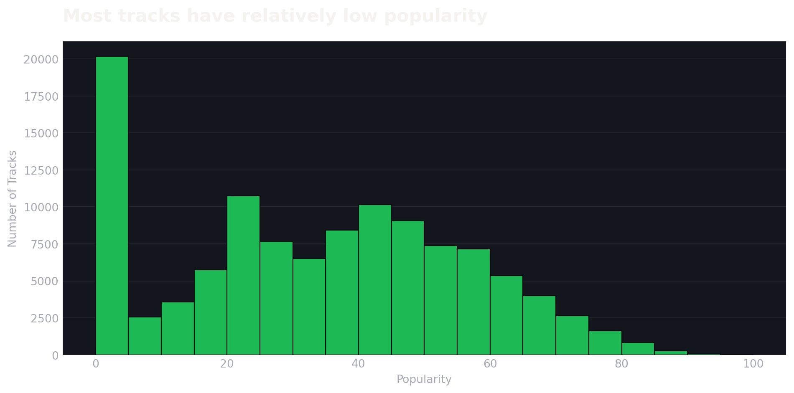
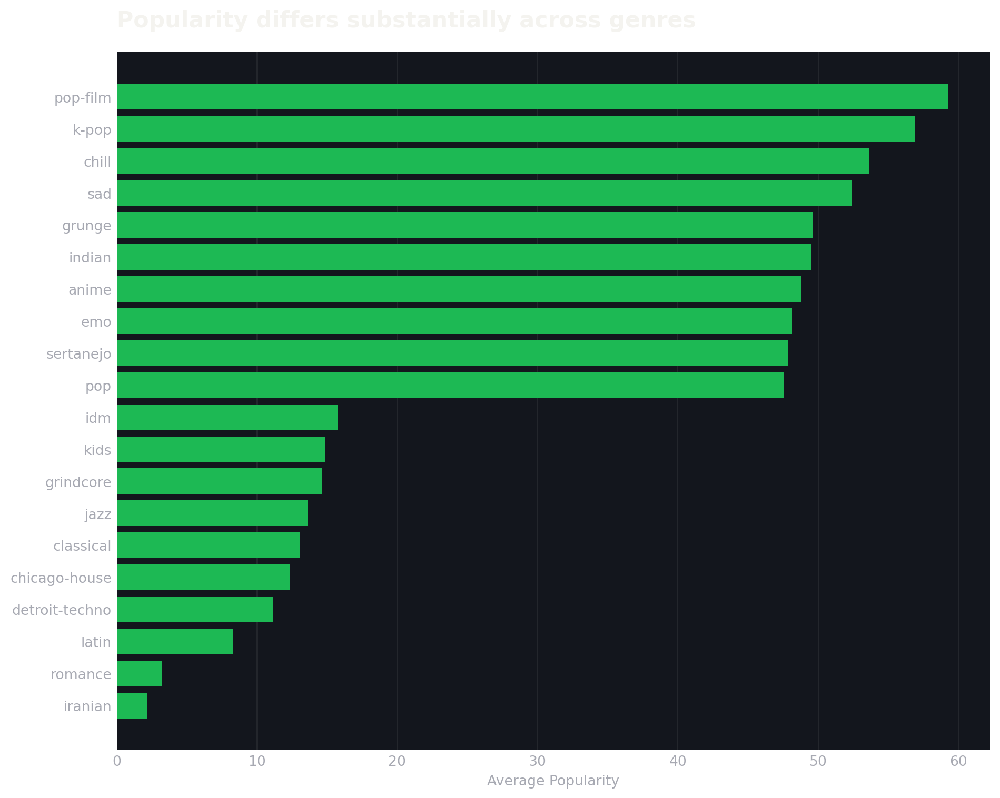
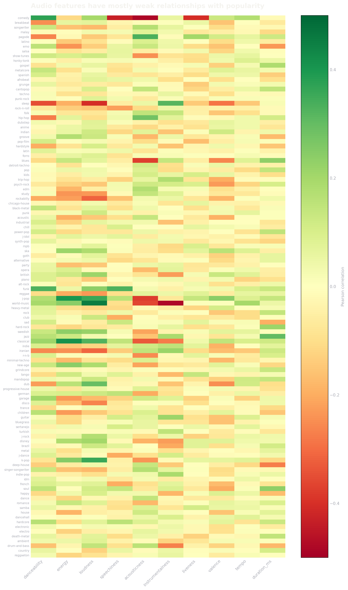
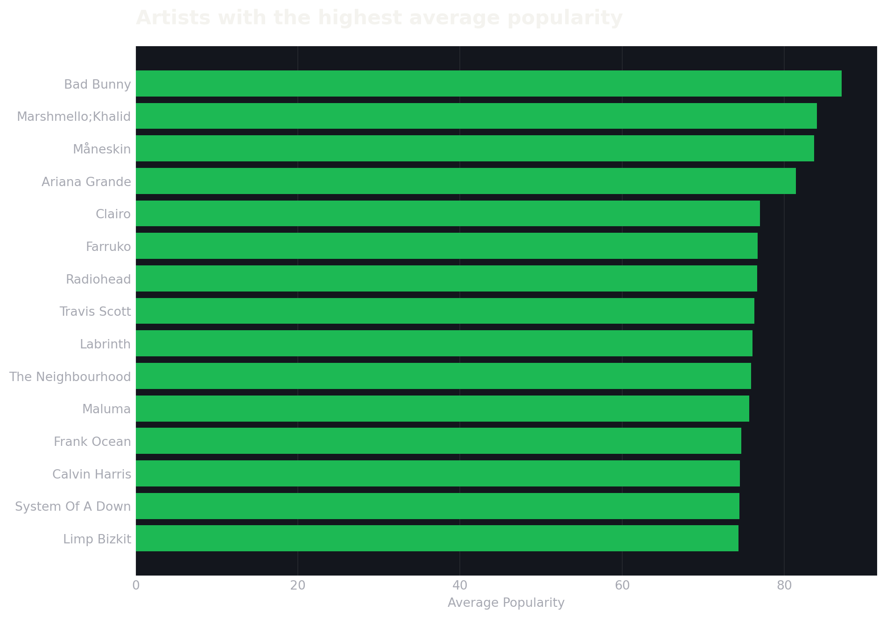

Code
import polars as pl
import matplotlib.pyplot as plt
df = pl.read_csv("../data/spotify-tracks-dataset-detailed.csv")import polars as pl
import matplotlib.pyplot as plt
df = pl.read_csv("../data/spotify-tracks-dataset-detailed.csv")Exploring 114,000 Spotify tracks to understand how genre, sound, and artist patterns shape popularity.
114K TRACKS
114 GENRES
31K+ ARTISTS
Spotify’s track data contains 114,000 tracks across 114 genres, with information ranging from basic metadata to detailed audio characteristics.
Each track includes measures such as danceability, energy, acousticness, instrumentalness, valence, tempo, and popularity.
114,000 TRACK RECORDS
114 GENRES
31K+ ARTISTS
20 FEATURES
Popularity ranges from 0 to 100, but the distribution is heavily concentrated toward the lower end.
The average track has a popularity of 33.24, while the median is 35.
fig, ax = plt.subplots(figsize=(10, 5))
fig.patch.set_alpha(0)
ax.set_facecolor("#13161d")
ax.hist(
df["popularity"],
bins=20,
color="#1DB954",
edgecolor="#0b0d12",
linewidth=0.8
)
ax.set_xlabel(
"Popularity",
color="#a7a9b2",
fontsize=10
)
ax.set_ylabel(
"Number of Tracks",
color="#a7a9b2",
fontsize=10
)
ax.set_title(
"Most tracks have relatively low popularity",
color="#f4f3ef",
fontsize=16,
fontweight="bold",
loc="left",
pad=18
)
ax.tick_params(
colors="#a7a9b2",
length=0
)
for spine in ax.spines.values():
spine.set_visible(False)
ax.grid(
axis="y",
color="#ffffff",
alpha=0.07,
linewidth=0.8
)
ax.set_axisbelow(True)
plt.tight_layout()
plt.show()
A large share of tracks have relatively low popularity. 34,177 tracks — nearly 30% of the dataset — fall between 0 and 20, while only 954 tracks reach the 81–100 range.
This suggests that highly popular tracks represent a relatively small portion of the Spotify catalogue.
Popularity varies considerably across genres. Some genres consistently appear near the top of the popularity scale, while others have much lower average popularity.
Rather than looking at all 114 genres at once, the chart below highlights the 10 highest- and 10 lowest-ranked genres by average popularity.
genre_popularity = (
df
.group_by("track_genre")
.agg(
pl.col("popularity").mean().alias("avg_popularity")
)
.sort("avg_popularity")
)
bottom = genre_popularity.head(10)
top = genre_popularity.tail(10)
genre_chart = pl.concat([bottom, top])
fig, ax = plt.subplots(figsize=(10, 8))
fig.patch.set_alpha(0)
ax.set_facecolor("#13161d")
ax.barh(
genre_chart["track_genre"],
genre_chart["avg_popularity"],
color="#1DB954"
)
ax.set_xlabel(
"Average Popularity",
color="#a7a9b2",
fontsize=10
)
ax.set_ylabel("")
ax.set_title(
"Popularity differs substantially across genres",
color="#f4f3ef",
fontsize=16,
fontweight="bold",
loc="left",
pad=18
)
ax.tick_params(
axis="both",
colors="#a7a9b2",
length=0
)
for spine in ax.spines.values():
spine.set_visible(False)
ax.grid(
axis="x",
color="#ffffff",
alpha=0.07,
linewidth=0.8
)
ax.set_axisbelow(True)
plt.tight_layout()
plt.show()
The most popular genres in this dataset are led by pop-film, k-pop, chill, and sad, while several niche genres occupy the lower end of the distribution.
Genre therefore appears to be an important contextual factor when comparing track popularity.
Popularity is influenced by more than genre alone. To investigate whether the characteristics of a track’s sound are associated with popularity, correlations were calculated between popularity and ten audio features within each genre.
The correlations are generally modest, suggesting that no single audio characteristic consistently explains popularity across genres.
import numpy as np
audio_features = [
"danceability",
"energy",
"loudness",
"speechiness",
"acousticness",
"instrumentalness",
"liveness",
"valence",
"tempo",
"duration_ms"
]
correlation_data = []
for genre in df["track_genre"].unique().to_list():
genre_df = df.filter(
pl.col("track_genre") == genre
)
row = {"track_genre": genre}
for feature in audio_features:
row[feature] = genre_df.select(
pl.corr(feature, "popularity")
).item()
correlation_data.append(row)
corr_df = pl.DataFrame(correlation_data)
matrix = corr_df.select(audio_features).to_numpy()
fig, ax = plt.subplots(figsize=(12, 20))
fig.patch.set_alpha(0)
ax.set_facecolor("#13161d")
im = ax.imshow(
matrix,
aspect="auto",
cmap="RdYlGn",
vmin=-0.5,
vmax=0.5
)
ax.set_xticks(range(len(audio_features)))
ax.set_xticklabels(
audio_features,
rotation=45,
ha="right",
color="#a7a9b2"
)
ax.set_yticks(range(len(corr_df)))
ax.set_yticklabels(
corr_df["track_genre"],
color="#a7a9b2",
fontsize=7
)
ax.set_title(
"Audio features have mostly weak relationships with popularity",
color="#f4f3ef",
fontsize=16,
fontweight="bold",
loc="left",
pad=18
)
ax.tick_params(length=0)
for spine in ax.spines.values():
spine.set_visible(False)
cbar = plt.colorbar(im, ax=ax)
cbar.ax.tick_params(
colors="#a7a9b2",
length=0
)
cbar.set_label(
"Pearson correlation",
color="#a7a9b2"
)
plt.tight_layout()
plt.show()
Across most genres, correlations with popularity remain relatively weak. Some genre-specific relationships stand out, but the overall pattern suggests that popularity cannot be explained by one simple audio characteristic.
This makes the relationship between a track’s sound and its popularity considerably more nuanced.
Genre provides one layer of context, but popularity can also vary substantially between artists.
Some artists have many tracks represented in the dataset, while others appear only a handful of times. To make the comparison more meaningful, this analysis focuses on artists with at least 10 tracks.
artist_stats = (
df
.group_by("artists")
.agg(
pl.len().alias("tracks"),
pl.col("popularity").mean().alias("avg_popularity")
)
.filter(pl.col("tracks") >= 10)
.sort("avg_popularity", descending=True)
.head(15)
)
fig, ax = plt.subplots(figsize=(10, 7))
fig.patch.set_alpha(0)
ax.set_facecolor("#13161d")
ax.barh(
artist_stats["artists"][::-1],
artist_stats["avg_popularity"][::-1],
color="#1DB954"
)
ax.set_xlabel(
"Average Popularity",
color="#a7a9b2",
fontsize=10
)
ax.set_ylabel("")
ax.set_title(
"Artists with the highest average popularity",
color="#f4f3ef",
fontsize=16,
fontweight="bold",
loc="left",
pad=18
)
ax.tick_params(
colors="#a7a9b2",
length=0
)
for spine in ax.spines.values():
spine.set_visible(False)
ax.grid(
axis="x",
color="#ffffff",
alpha=0.07,
linewidth=0.8
)
ax.set_axisbelow(True)
plt.tight_layout()
plt.show()
Even after requiring at least 10 tracks per artist, substantial differences remain in average popularity. Måneskin and Lil Nas X rank among the strongest performers in this dataset, while artist popularity varies considerably across the catalogue.
However, the number of tracks an artist contributes to the dataset is highly uneven, so average popularity should be interpreted alongside representation.
Before drawing conclusions from the analysis, it is important to understand how the dataset is structured.
A PostgreSQL data-quality check revealed that the 114,000 records do not represent 114,000 unique tracks. There are 89,741 unique track IDs, leaving 24,259 additional records where tracks appear more than once.
24,259
DUPLICATE RECORDS
89,741
UNIQUE TRACKS
114,000
TOTAL RECORDS
The duplicates are not necessarily accidental copies.
The same track ID can appear under multiple genre labels, meaning the dataset is structured around track–genre records rather than strictly unique tracks.
For example, one track appears across 9 different genres in the dataset.
This matters when interpreting the analysis: a track may contribute to multiple genre-level calculations, so genre comparisons should be understood in the context of this dataset structure.
The repeated track IDs appear to reflect the way genres are assigned in the source data rather than simple duplicate rows.
Therefore, the analysis retains the original records rather than removing them blindly. Deduplicating by track_id would remove legitimate genre associations and change the structure of the dataset being analyzed.
The exploratory analysis was complemented by two SQL engines, each serving a different purpose.
DuckDB was used for fast analytical queries directly against the CSV, while PostgreSQL was used to examine the dataset as a relational database and perform deeper data-quality checks.
Fast analytical queries directly on the dataset.
Relational analysis and data-quality investigation.
One of the first analytical questions was whether some genres consistently attract more popular tracks.
DuckDB makes this type of aggregation straightforward:
SELECT
track_genre,
COUNT(*) AS tracks,
ROUND(AVG(popularity), 2) AS avg_popularity
FROM spotify_tracks
GROUP BY track_genre
ORDER BY avg_popularity DESC
LIMIT 10;The results placed pop-film, k-pop, chill, and sad among the highest-average-popularity genres in the dataset.
SQL also made it easy to compare popularity across explicit and non-explicit tracks.
The results showed:
| Explicit | Tracks | Average Popularity | Median Popularity |
|---|---|---|---|
| No | 104,253 | 32.94 | 34 |
| Yes | 9,747 | 36.45 | 37 |
Tracks marked as explicit had a higher average and median popularity in this dataset.
This is an association rather than evidence that explicit content causes higher popularity.
DuckDB was useful for quickly exploring aggregates and distributions, while PostgreSQL provided a more structured environment for investigating duplicates, track IDs, and genre relationships.
Using both helped validate and extend the exploratory analysis rather than relying on a single tool.
The analysis reveals that Spotify track popularity is shaped by a combination of factors rather than one dominant characteristic.
01
Most tracks sit toward the lower end of the popularity scale, while highly popular tracks make up a relatively small part of the catalogue.
02
Average popularity varies substantially between genres, suggesting that genre provides useful context when comparing tracks.
03
No single audio feature consistently explains popularity across genres. Relationships between sound characteristics and popularity are generally modest.
04
Some artists show considerably higher average popularity than others, although representation in the dataset varies widely.
05
The 114,000 records contain repeated track IDs across genres, meaning the dataset should be interpreted as track–genre observations rather than 114,000 unique songs.
06
DuckDB and PostgreSQL made it possible to validate patterns, investigate duplicates, and examine the dataset from a relational perspective.